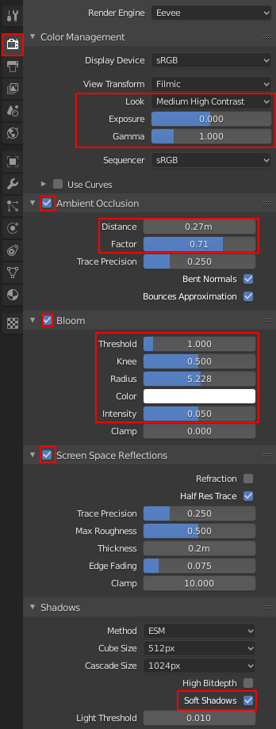

Übung 4.2 - Licht und Rendering
1. Szenenanordnung

Wechselt zum zurück zum Layout Workspace
- Stellt die Ansicht auf Rendered um [1]
- Ordnet eure Objekte (Schwert & Stein) hübsch an.
- Modelliert einen einfachen Untergrund hinzu, dem ihr das gleiche Material wie dem Stein geben könnt (alternativ könnt ihr natürlich auch ein neues Material entwerfen).
- Platziert die Kamera. Klickt dazu auf das Kamera-Icon [2] oben Rechts in der 3D Ansicht (oder
Numpad + 0). Über denView → Navigation → Walk Navigationkann ein “Ego” Modus aktiviert werden, in dem ihr die Ansicht mitWASDund der Maus anpassen könnt.
2. Licht
2.1 HDRi

- Fügt eine HDRi-Map hinzu. Ladet euch dazu z.b. von HDRI Haven eine entsprechende Map herunter (2k reicht vorerst).
- Die .hdr Datei kann nun im World Tab des Properties Editors als Hintergrund gesetzt werden. Klickt hierzu Use Nodes und wählt als Quelle für die Farbe Environment Texture aus. > High Dynamic Range Dateien können nicht wie die meisten Bildformate nur Werte von 0.0 - 1.0 für Rot,Grün und Blau speichern, sondern Werte von 0 - ∞ (als 32bit Float). Somit können Helligkeiten dargestellt werden und das Bild kann als Lichtquelle benutzt werden. Eine HDRi Map wird dabei in 360° auf dem Hintergrund der 3D Szene dargestellt.
2.2 Sonne

- Fügt Lichter hinzu [3]. Wählt dazu im Add Menü unter dem Menüpunkt Light z.b. Sun aus. Für Außenszenen am Tag reicht hier die Sonne + HDRi schon aus.
- Rotiert und verschiebt eure Sonne, bis ihr mit Beleuchtung und Schattenwurf zufrieden seid.
- Wenn die Sonne markiert ist, können Farbe, Stärke und Radius im Properties Editor im Tab Light eingestellt werden. Ein höherer Radius lässt die Schatten weicher werden wenn Soft Shadows (siehe 3.) eingestellt ist.
2.3 Lichtblocker (Freiwillig)
Eine Szene wirkt lebendiger, wenn das Sonnenlicht von Schatten unterbrochen wird. Es wird vermittelt, dass außerhalb der Kamera Objekte schatten werfen und somit wirkt die Szene tiefer.

- Erstellt ein
Mesh → GridObjekt und stellt im Ausklappmenü unten links die benötigte Anzahl (hier z.b. 16x16) an Unterteilungen ein. - Löscht von diesem Objekt ein paar Polygone um Löcher für das Licht zu erzeugen. Ihr könnt auch einen Subdivision Modifier hinzufügen, um die Ecken abzurunden.

- Gebt dem Objekt ein neues Material. Stellt den im Materialtab für den Principled BSDF Shader den Alpha Wert auf 0 und stellt unter Settings Blendmode auf Alpha Hashed. Da Shadow Mode immernoch auf *Opaque steht, wird nun das Objekt selbst unsichtbar, während der Schatten sichtbar bleibt.
- Plaziert den Lichtblocker nun so, dass er einen Schatten auf die Szene wirft.
3. Rendereinstellungen
- Experimentiert mit den unten markierten Werten in den Rendereinstellungen (Properties Editor) und aktiviert die Effekte, die euch sinnvoll erscheinen.

Erklärung zu den Effekten
Erläuterung der Parameter im Blender Manual (englisch)
- Color Management - Einstellungen für Belichtung, Kontrast etc.
- Ambient Occlusion Auch Umgebungsverdeckung - simuliert Verdunkelung in für indirektes Licht schwerer erreichhbaren Stellen (Vertiefungen etc.). Distance ist dabei
- Bloom simuliert Überstrahlung von hellen Stellen
- Screen Space Reflections muss für Reflektionen aktiviert werden. Screen Space Reflektions sind hierbei aber nur eine Annäherung. Für akkurate Reflektionen wird Ray Tracing benötigt (auch in Blender mit dem Cycles Renderer enthalten aber nicht in Echtzeit)
- Soft Shadows muss für weichere Schatten (abhängig von Lampenradius) aktiviert werden.

- Rendert nun die Szene mit F12 oder über
Render → Render Image - Speichert die gerenderte Szene als Bilddatei ab
Aufgabe
Ordnet Stein und Schwert an und beleuchtet die Szene. Stellt die Rendereinstellungen ein und rendert die Szene.
Die Abgabe besteht aus der Blenderdatei und dem gerenderten Bild. Große Texturen (wie z.b. die HDRi) müssen nicht mit in die .blend Datei gepackt werden.
Ressourcen & Tutorials zum Thema
Visuelle Repräsentation der Parameter der Principled BSDF Shadernodes:
| Art/Länge | Titel | Thema | Quelle |
|---|---|---|---|
| 8:56 | Blender 2.8 How to use PBR textures with principled bsdf Cycles/Eevee | Materialien | YouTube - CGMatter |
| 12:23 | Blender 2.8 Beginner Tutorial - Part 6: UV Unwrapping | UV-Editing | YouTube - CG Boost |
| 22:45 | Blender 2.8 Beginner Tutorial - Part 7: Texture Painting | Texturen, Materialien | YouTube - CG Boost |
| 7:14 | Shading Editor - Blender 2.80 Fundamentals | Materialien | YouTube - Blender (offizieller Kanal) |
| 9:00 | Blender 2.8 - The Node Editor | Materialien | YouTube - Rory Allen |
| 15:04 | Blender 2.8 Beginner Tutorial - Part 9: Procedural Materials | Materialien | YouTube - CG Boost |
Freiwillige Zusatzaufgabe
- Erstellt auch ein oder mehrere Materialien für de Drachen und fügt ihn in die Szene ein.